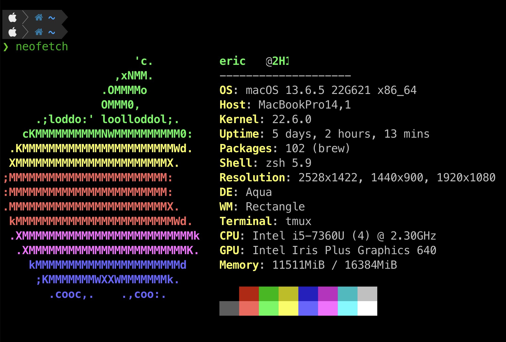
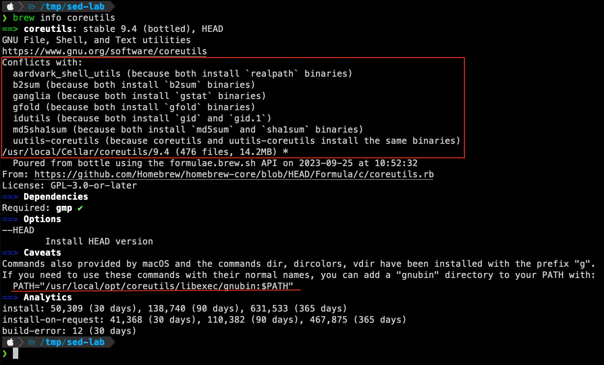
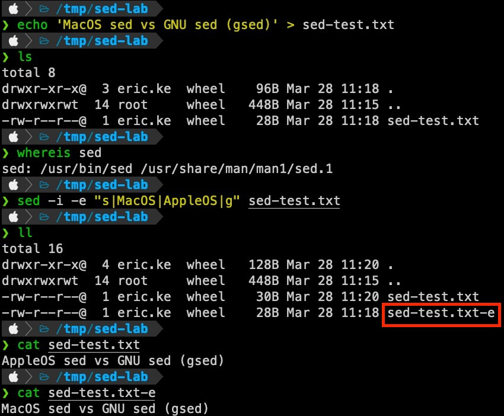
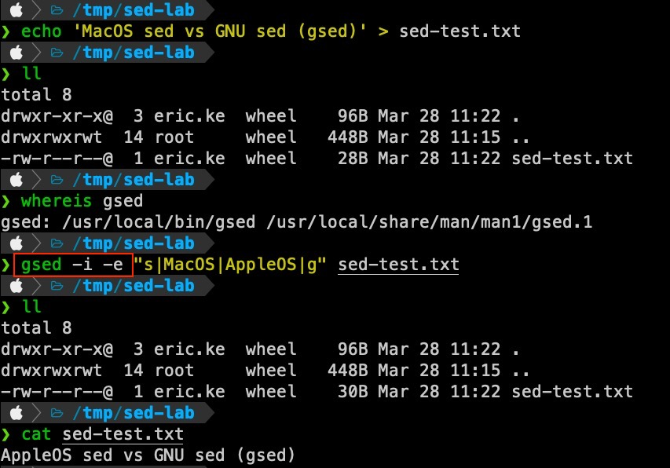
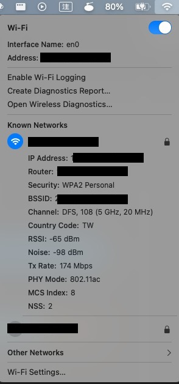
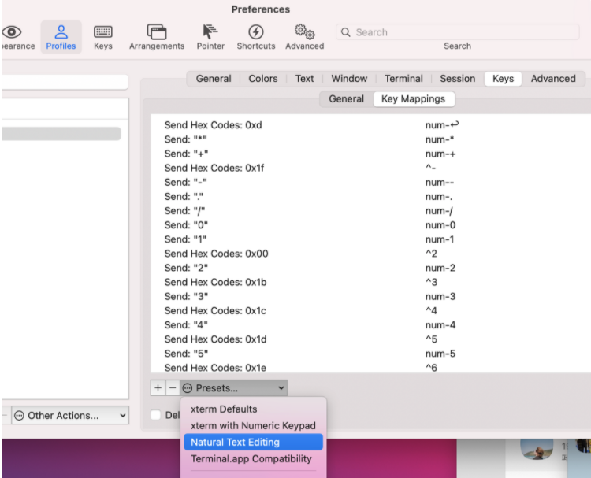

MacOS 新手筆記
Contents

前言
好久沒有打 blog 了 囧，第一篇先用 MacOS 新手筆記 來練筆吧 XD
在 2023.04.10 進公司之前我完全沒有使用過 MacOS，此篇記錄一位 MacOS 新手如何上手的心得還有推薦安裝的軟體。
推薦閱讀
- Mac新手入門教學 - 蘋果仁 - 果仁 iPhone/iOS/好物推薦科技媒體
- Mac 快捷鍵 : 新手一定要學會的 13 種常用組合 – 蘋果迷 APPLEFANS
- [Day2] ＭacOS - 操作上手 - iT 邦幫忙::一起幫忙解決難題，拯救 IT 人的一天
- [Day4] ＭacOS - 軟體安裝清單 - iT 邦幫忙::一起幫忙解決難題，拯救 IT 人的一天
- [Day5] ＭacOS - 打造美觀的終端機畫面 - iT 邦幫忙::一起幫忙解決難題，拯救 IT 人的一天
推薦安裝
Terminal 系列
- Homebrew: MacOS 的第三方套件管理工具，很多工具都能透過
brew安裝 (包含 GUI app)
|
|
- iTerm2 - macOS Terminal Replacement: 取代 MacOS 內建的 Terminal
|
|
目前我使用的 plugin 有這些
|
|
- nerd-fonts: 提供了很多酷酷的字體，美化 terminal。
|
|
- romkatv/powerlevel10k: A Zsh theme
|
|
- zsh-autosuggestions:
Ctrl + R自動提示版
|
|
|
|
如果要調整提示的顏色:
|
|
- zsh-syntax-highlighting: shell 語法差異化高量
|
|
- coreutils: 補足 GNU 常用的 CLI tools
MacOS 缺好多東西 QQ，連 sha256sum 都沒有。GNU coreutils command 列表
|
|

▲ 安裝後會告訴我們有些 command 名稱相同造成衝突，如果想使用 GNU 的版本可以加上 g 前綴。例如 realpath -> grealpath。如果想用原本的名稱可以增加 $PATH 變數。(我自己偏好使用 alias 啦)
- gnu-sed: GNU 版 sed，我熟悉的 sed
MacOS 內建的 sed 使用 sed -ie "s|abc|123|g" a.txt 的時候會被建立一個結尾帶 ’e’ 的備份檔案 (a.txte)，在多個檔案處理場景中會很麻煩要多花時間刪除備份檔案，而且檔案是在 git repo 中不用擔心回不去。

▲ MacOS 內建的 sed 會產生備份檔案。
解決方式是安裝 GNU 版本的 sed，使用 gsed 來取代原本的 sed。
|
|

▲ GNU sed (gsed) 不會產生備份檔案，是我熟悉的 sed。dywang - sed
或者麻煩一點可以這樣
|
|
cygwin - sed search and replace creating new file - Stack Overflow
- iproute2mac: MacOS 版的
iproute2，提供ip指令
|
|
Docker Desktop 在 MacOS 上面用起來很卡、很吃資源，所以我後來都使用 colima 取代 Docker Desktop 來提供 docker
|
|
|
|
|
|
Use Colima to Run Docker Containers on macOS – Small Sharp Software Tools
App 系列

▲ GitHub macOS system monitor in your menu bar
▲ 圖片來源 AIDente 限制電池充電上限，為電池增加壽命。
- KeepingYouAwake: 避免 Mac Lock screen 之後就直接關閉顯示器
外接 hub 在喚醒時可能會等 5~10 秒，很麻煩

操作系列

▲ 對著上方工具列 Wi-Fi 圖示按下 + Option (Alt) 可以看 Wi-Fi 頻段。 身為一個阿宅看不到 Wi-Fi 詳細資訊真的很痛苦
如果同時有 Ethernet 與 Wi-Fi 連接，Network service 會決定 default gw 順序
|
|
re-order ref
|
|
清除 DNS Cache
|
|
截圖
- 選取截圖到剪貼簿：
Command + Ctrl + Shift +4 - 截圖到檔案:
Command + Shift + 5
如果要變更截圖預設格式成 JPG
|
|
Eason 哥推薦 Xnip 比 Mac 內建還好用的免費截圖 App - 電腦王阿達
雜項與茶包射手
既不是推薦安裝，也不是操作技巧，就是一些雜項與茶包射手。
列出背景啟動項目指令 sfltool dumpbtm
我也不知道看 MDM Payload 要幹嘛
|
|
oh-my-zsh 開啟 kubectl 自動補齊功能
- zsh plugin 啟用
kubectl<= 理論上應該就有自動補齊功能了 - 加上
|
|
Fixing kubectl autocompletion for an alias in Zsh - Deferred Posts
Autocompletion for kubectl and aliases using oh-my-zsh · Thorsten Hans’ blog
iTerm 無法使用 Option + Arrow 問題

▲ command line - iTerm - going one word backwards and forwards - Ask Different
參考資料
Author 老柯
LastMod 2024-03-28 (ae1b2c6)